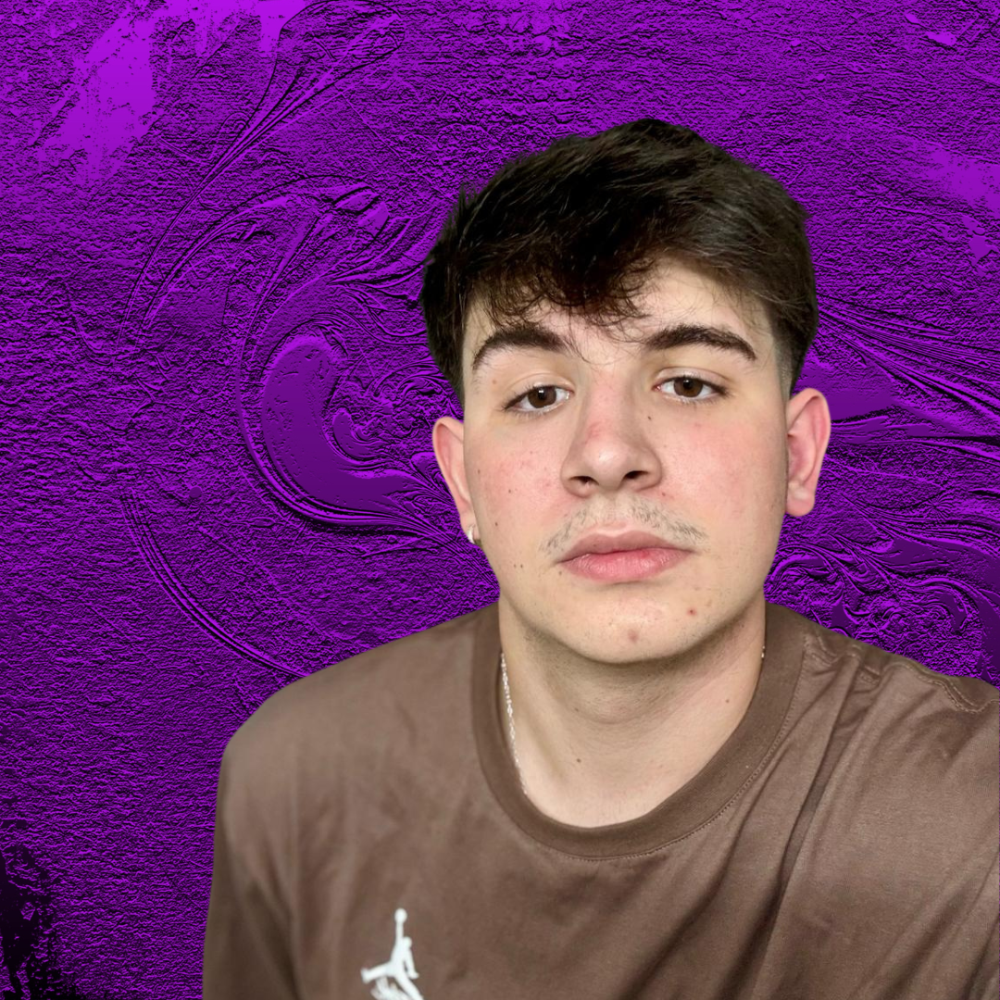

<div id="about" class="box">
  <div class="container">
    <!-- Header Section -->
    <div class="profile-section">
      <div class="intro">
        <h1 class="title">olá meu nome é <span>Gabriel Fasolim :)</span></h1>
        <h3 class="subtitle">desenvolvedor Full-Stack</h3>
        <div class="cta-buttons">
          <a
            target="_blank"
            href="../../../assets/Gabriel Fasolim CV- PT BR.pdf"
          >
            <button class="btn-primary">CURRÍCULO</button>
          </a>
          <a href="#contato">
            <button class="btn-primary">CONTATO</button>
          </a>
        </div>
      </div>
      <div class="profile-image">
        <a target="_blank" href="https://github.com/GabrielFasolim">
          
        </a>
      </div>
    </div>

    <!-- About Me Section -->
    <h2 class="section-heading">Sobre Mim</h2>

    <div class="about-content">
      <div class="bio">
        <p>
          Natural de Pato Branco, Paraná, aceitei o desafio de me mudar para
          Curitiba para aprofundar meus conhecimentos em tecnologia. Atualmente,
          curso Sistemas de Informação na PUCPR e atuo como Desenvolvedor Júnior
          Full-Stack, com experiência prática no desenvolvimento de soluções
          completas utilizando C#, MySQL, Vue.js e Flask, sempre seguindo
          metodologias ágeis como o Scrum.
        </p>
        <p>
          Em 2024, tive a oportunidade de atuar como Monitor de Desenvolvimento
          Web na PUCPR, auxiliando estudantes na compreensão de conceitos-chave
          de programação e orientando-os em projetos práticos voltados ao
          mercado.
        </p>
        <p>
          Minhas habilidades técnicas incluem Desenvolvimento de Software, com
          proficiência em JavaScript (Angular, Vue.js), MySQL e C# (.NET), além
          de familiaridade com boas práticas de versionamento, testes e
          arquitetura de software.
        </p>
        <p>
          Durante minha trajetória acadêmica, contribuí para dois projetos
          premiados: o ICHILD (2023), uma solução inovadora para a gestão
          inteligente do transporte escolar, e o Agenda Hub (2024), uma
          plataforma de agendamento voltada para profissionais autônomos,
          reconhecida por sua criatividade, praticidade e excelente experiência
          de uso. Ambos os projetos foram premiados pelo Conselho de Avaliação e
          vencedores na categoria Voto Popular.
        </p>
        <p>
          Atualmente, sou o desenvolvedor Front-End líder de um projeto IoT para
          gestão de sistemas de iluminação pública inteligente, com foco na
          eficiência operacional e redução de custos. Estou sempre em busca de
          novos desafios que me permitam aplicar meus conhecimentos, aprender
          continuamente e contribuir de forma significativa para soluções
          tecnológicas de impacto.
        </p>
      </div>

      <div class="info-cards">
        <div class="card">
          <h3>Experiência</h3>
          <div class="card-item">
            <p class="emphasis">RadioEnge - 5 meses</p>
            <p>Desenvolvedor Web - Junior</p>
            <p>Vue.js, .NET, MYSQL</p>
          </div>
          <div class="card-item">
            <p class="emphasis">RadioEnge - 1 ANO</p>
            <p>Desenvolvedor Web - Estágio</p>
            <p>Vue.js, .NET, MYSQL</p>
          </div>
          <div class="card-item">
            <p class="emphasis">Hardness sistemas - 3 MESES</p>
            <p>Desenvolvedor Web - Estágio</p>
            <p>PHP, JavaScript, MySQL, jQuery, AJAX</p>
          </div>
        </div>

        <div class="card">
          <h3>Línguas</h3>
          <p>Português - Nativo</p>
          <p>Inglês - Avançado</p>
        </div>
      </div>
    </div>
  </div>
</div>
